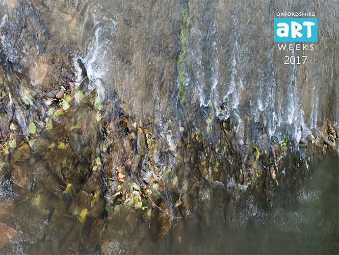
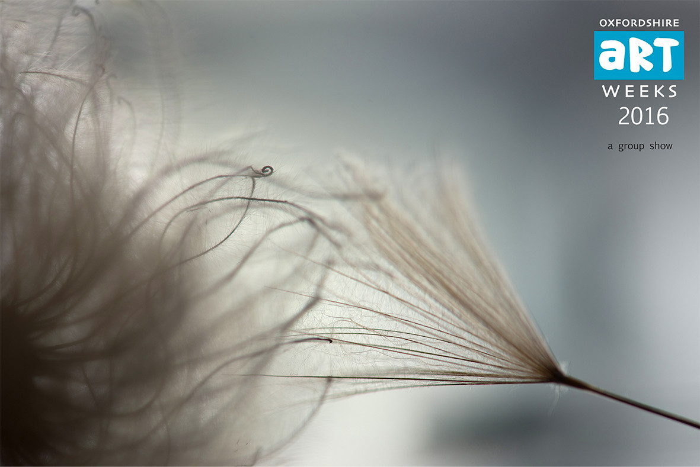

judie waldmann
community photographic artist

. . . mist of understanding . . .
Exhibition May 20-29, 2017

where the mood takes you
Exhibition May 2016

...within reach...
Exhibition Feb 2015
(2012-2015)